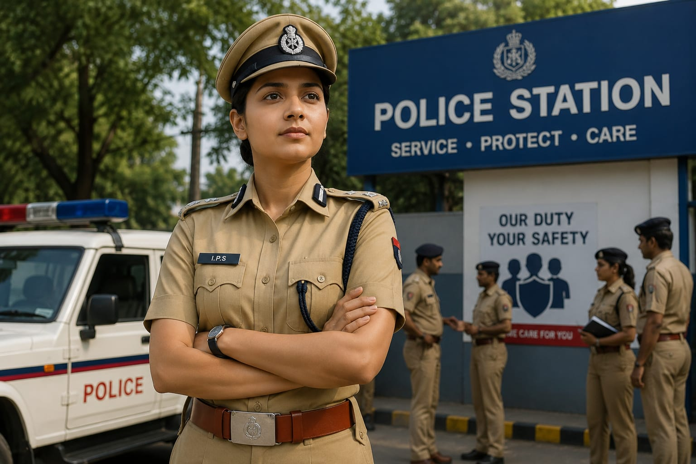

- IPS stands for Indian Police Service.
- "Police Service" means protecting people and maintaining law and order.
- An IPS Officer is a senior police officer who works in the police department.
- They supervise police work, help prevent crime, and protect the public.
- They may also investigate serious crimes and manage police operations.
- 👉 In simple words: IPS Officers are senior police officers who work to maintain law and order and keep people safe.
IPS Officer
👮 What Do They Do?

🎓 How to Become an IPS Officer
STEP 1
Complete your Class 12 from a recognized board. You can choose Arts, Science, or Commerce.
STEP 2
Complete a bachelor's degree from a recognized university. (B.A., B.Sc., B.Com., B.Tech., or any other bachelor's degree)
STEP 4
Prepare for the Preliminary Examination (Prelims) and pass the exam.
STEP 5
Prepare for the Main Examination (Mains) and pass the exam.
STEP 6
Attend the Personality Test (Interview) conducted by UPSC.
STEP 7
If selected, complete the IPS training provided by the Government of India and become an IPS Officer.
Note: There is no separate degree for becoming an IPS Officer. After completing any bachelor's degree, you can apply for the UPSC Civil Services Examination.
STEP 1
Imagine you are working as an IPS Officer in a district.
STEP 2
You start your day by meeting police officers.
STEP 3
You discuss important problems and decide what the police should do.
STEP 4
You visit different places to make sure people are safe and the police are doing their work properly.
STEP 5
If there is a serious crime or an emergency, you guide the police team and help solve the situation.
STEP 7
If you enjoy protecting people, leading a team, and solving problems, this career may suit you.
(Click Yes or No for each question)
1. Have you ever heard about the Indian Police Service (IPS)?
2. Do you know what the police department does?
3. Are you interested in learning how the police department works?
4. Would you like to do a job where you help protect people and maintain law and order?
5. Imagine you are an IPS Officer. Your job is to supervise police work, protect people, and help maintain law and order. Does this excite you?